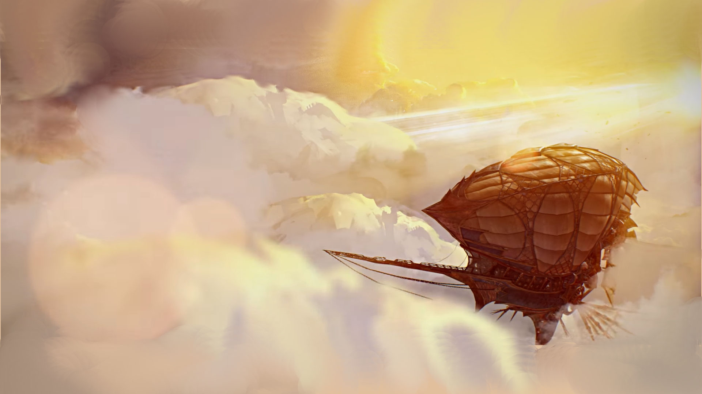

28.08.2018
Newsy | Eventy Cykliczne
Szóste urodziny Guild Wars 2
Poniższy tekst został przygotowany na podstawie Balance Updates, the Herald’s Near Future, and PvP League Season 13... Balance Updates, the Herald’s Near Future, and PvP League Season 13.
Sezon 13 Ligi PvP — Powraca możliwość brania udziału w turnieju parami
Sezon 13 Ligi PvP zacznie się 28 sierpnia! Możliwość brania udziału w turnieju parami powraca dla wszystkich ranków, a dotychczasowe tytuły przestaną obowiązywać. Wraz z premierą czeka na nas aktualizacja dotycząca balansu gry i umiejętności.
Na temat sezonu 13 można porozmawiać w tym wątku na oficjalnym forum a także dowiedzieć się więcej na temat zmian w mechanice heralda - elitarnej specjalizacji revenanta od działu Systemów. Jeśli masz pytania do zespołu, zadaj je za pośrednictwem oficjalnego forum Guild Wars 2 i weź udział w najnowszym ArenaNet Forum Chat.
Zmiany dot. heralda - elitarnej specjalizacji revenanta
Revenanci pojawili się wraz z wprowadzeniem dodatku Guild Wars 2: Heart of Thorns™ by być wsparciem w potyczkach i bitwach przeciwko Starożytnemu Smokowi Mordremothowi. Posiedli oni moc przywoływania w walce potęgi legendarnej smoczycy Glint.
Wraz z najbliższa aktualizacja dotycząca balansu, wprowadzony zostanie szereg zmian do linii specjalizacyjnej heralda, tak by dorównał on do aktualnego poziomu; Glint bez wątpienia to przewidziała.
Po pierwsze, każda z istniejących umiejętności aspektu ma odpowiednią aktywną umiejętność oznaczoną jako umiejętność konsumowania. Ma to na celu rozróżnienie tych dwóch elementów i pozwala na nieco większą zmienność niektórych traitów.
Podczas gdy Glint mogła w dalekiej przeszłości cierpliwie oczekiwać zmian, my chcieliśmy wnieść bardziej znaczącą rozgrywkę do tej specjalizacji i zaczęliśmy od zdolności F2 - Facet of Nature. Uprzednio, ten aspekt wzmacniał u pobliskich sojuszników boon duration boonów nakładanych na innych. Wkrótce zamiast tego będzie dawał sojusznikom męstwo zależnie od przyznanej legendy!
Przykładowo, wcielenie Króla Jalis Ironhammer redukuje obrażenia jakie będzie otrzymywał każdy z sojuszników. Jeśli przyzywasz występną naturę Shiro Tagachi'ego, sojusznicy wokół ciebie będą wykradać życie z trafionych przeciwników. Jeśli zdecydujesz się na przyzwanie innej legendy, podczas gdy aktywny jest Aspekt of Natury, wsparcie, jakie zapewnisz swoim sojusznikom, zmieni się wraz z tobą, pozwalając ci dostosować się w lot do zaistniałej sytuacji.
Ponadto, umiejętność konsumowania Prawdziwej Natury również zmienia się wraz z przyzywaną legendą. Prawdziwa Natura każdej legendy jest zrośnięta z jej wątkiem przewodnim, ale jednocześnie pokazuje inne oblicze tego aspektu. Użycie Prawdziwej Natury legendarnego krasnoluda wzmocni sojuszników w pobliżu kilkoma stackami stability — utrzymując ochronę, jednak nie przed obrażeniami, a przed CC’kami. Umiejętność F2 legendarnego assassina, pozbawi pobliskich przeciwników boonów, zachowując jego ofensywny i agresywny styl.
W przeobrażeniu cech heroldów, nawiązaliśmy bardziej do współczucia Glint, która starała się uchronić ludzkość przed Starszymi Smokami, w konsekwencji czego zmuszona była poświęcić się. Pozostawiono nam trzy różne motywy:
- Wspieranie ludzkości.
- Jednoczenie grupy championów.
- Przywoływanie daru jej proroctwa.
Te motywy przewodnie zostaną wcielone w specjalizacyjne linie traitów:
- Udzielanie magicznego wsparcia sojusznikom z leczeniem i boonami włącznie.
- Koncentracja na aspektach Glint i wzmocnienie ich mocy.
- Skierowanie się do własnego wnętrza i przekazywanie mocy.
Oto kilka przykładów traitów, tak nowych jak i istniejących:
- Elevated Compassion: Ulecz pozostałych sojuszników gdy dostarczasz im boon(y).
- Core Value: Wzmacnia aktywne efekty twojego aspektu (zdolność F2).
- Hardening Persistence: Otrzymujesz redukcje obrażeń zależna od ilości zmagazynowanej energii, a umiejętności z tarczy usuwają od teraz kondycję.
Wspiera sojuszników w sytuacjach dwóch na jednego zwiększając ich żywotność jednocześnie wzmacniając ich.
Ten trait wzmacnia efekt ponownego użycia umiejętności F2, co sprawia, że wybór przeżywanej legendy ma o wiele dalej idące konsekwencje. Na przykład użycie aspektu Shiro z aktywnym Core Value usuwa większą liczbę boonów z pobliskich wrogów.
Ten trait znajdował się wcześniej na poziomie Adepta, a teraz został przeniesiony na poziom Master. Dotychczasowy toughness został zastąpiony przez procentową redukcję obrażeń, a także od teraz poprawia zdolności tarczy, która dzięki niemu usuwa kondycję z sojuszników.
Dodatkowo, przyzywanie Glint będzie od teraz możliwe również pod woda.
Do zobaczenia w Tyrii!
Aktualizacja 28.08.2018
Rozpoczęły się oficjalne obchody urodzin. W życie wszedł balance patch zapowiadany wcześniej, a także dodano nową kolekcję miniaturek - springerów. Rozbudowano również wardrobe, do którego dodane zostały novelties, do których zaliczyć możemy instrumenty muzyczne, środki transportu (latający dywan etc.), zabawki, siedziska itp.